Animated GIFs that narrate movement through the space.
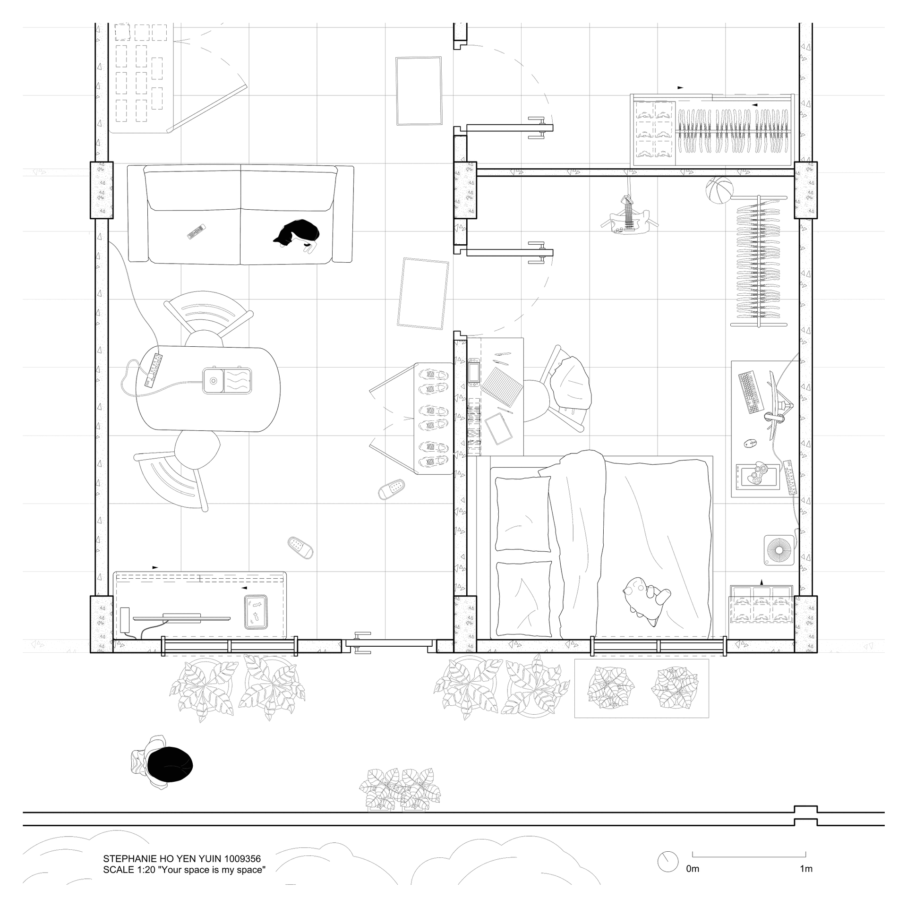
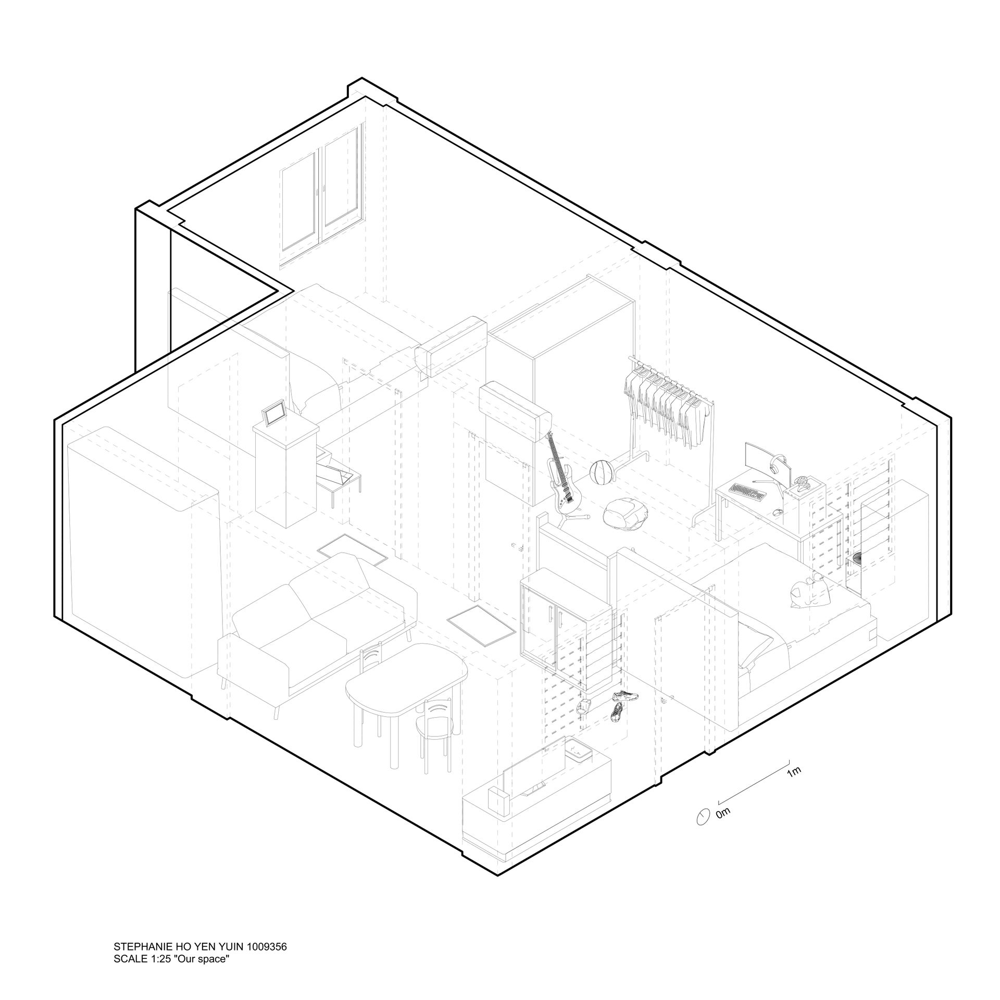
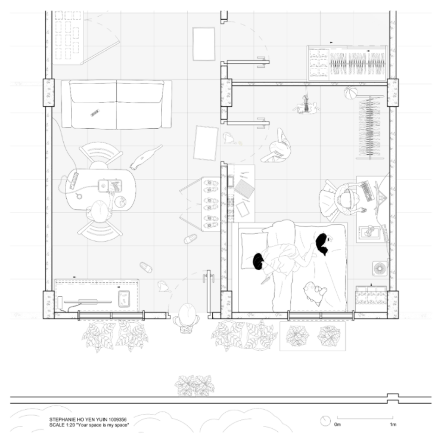
My personal space as a case study - the room was measured and drafted as a scale-true floor plan in Rhino, with lineweight discipline and a black & white palette. Captures how I inhabit the space through daily activities like eating, gaming, and interacting with my cat.
Lineweights are not accurately represented in the exported PDF.
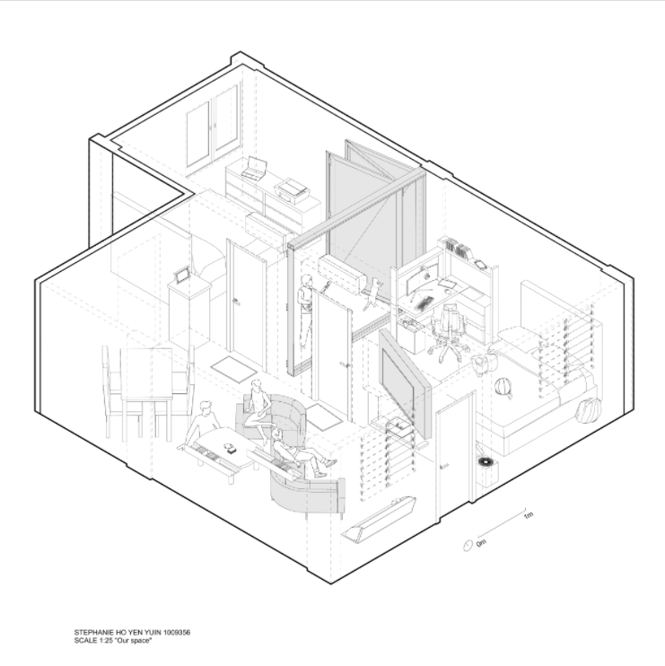
Starting from the same personal space, the brief shifted to 3D representation - modelled in Rhino using referenced DWG assets, then flattened with Make2D into an exploded axonometric with section cuts. Proposed modifications include a rotating TV wall cutout, bifold doors to free up circulation, and an S-shaped sofa with a low floor table for flexible social use.
Lineweights are not accurately represented in the exported PDF.
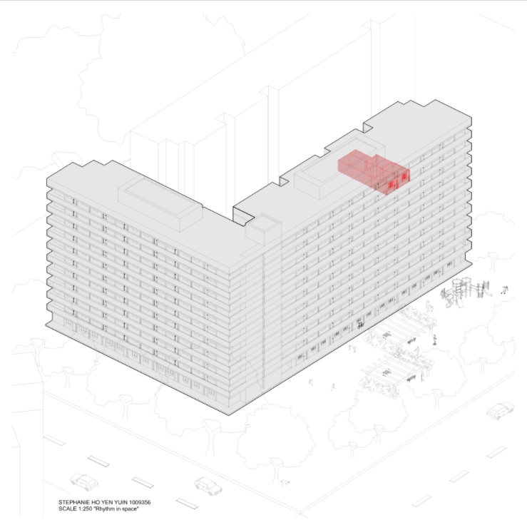
Expanding outward from room to block to city, GIS building data was imported into Rhino to generate accurate 3D massing of the surrounding neighbourhood. My HDB block is mapped onto the existing geometry, situating my apartment within its broader street and city context.
Lineweights are not accurately represented in the exported PDF.
Tasked with designing a hillside cabin starting from three lines. Using Grasshopper, the lines were extruded into spatial volumes and nested onto the terrain. Sectional perspectives were cut to illustrate the interior life and material intent. AI video generation was used for spatial storytelling.
Our chosen theme was continuity through the ramp, where movement, space, and terrain flow seamlessly together. By embedding the cabin into the hill and extending the terrain onto the roof, the cabin and landscape merge into one continuous form.
Video editing, Revit cabin modelling, and integration of some AI-generated visuals by teammates.
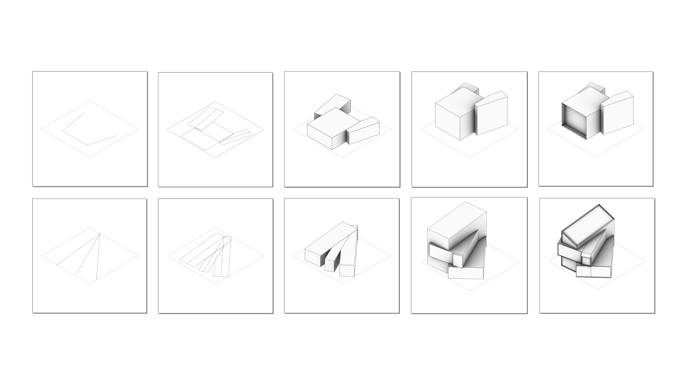
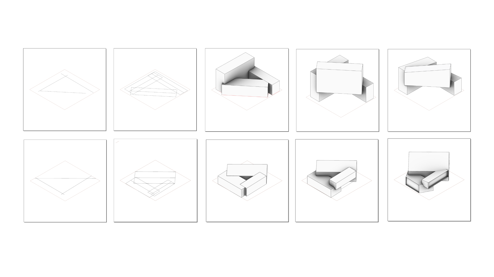
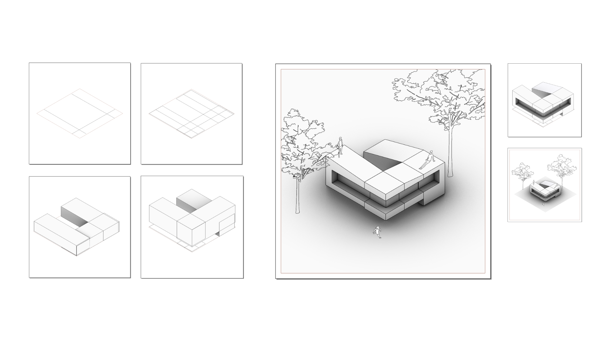
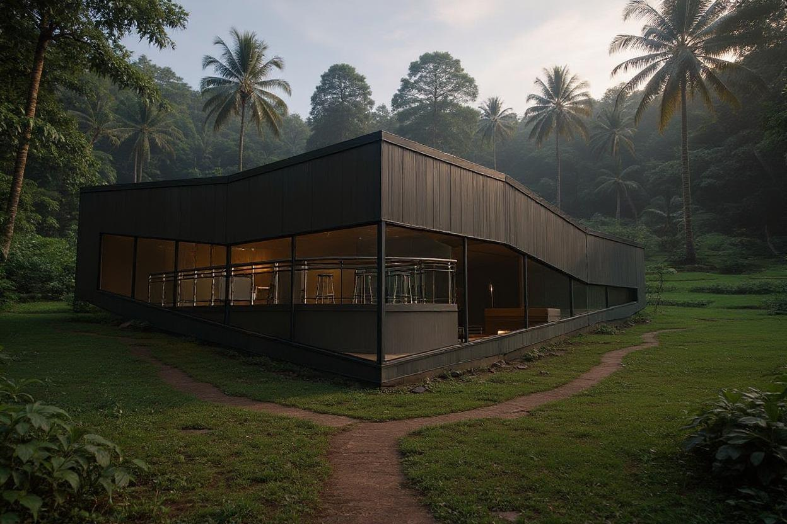
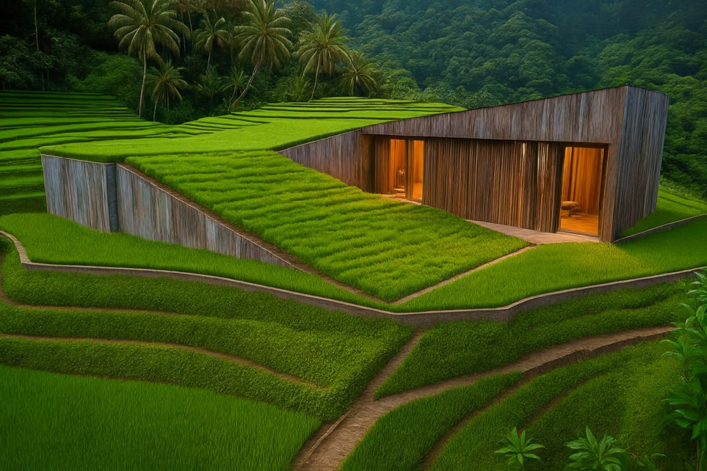
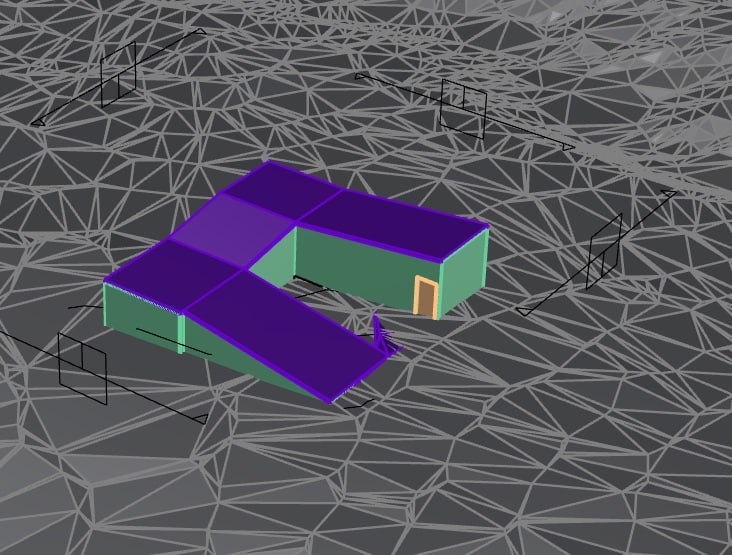
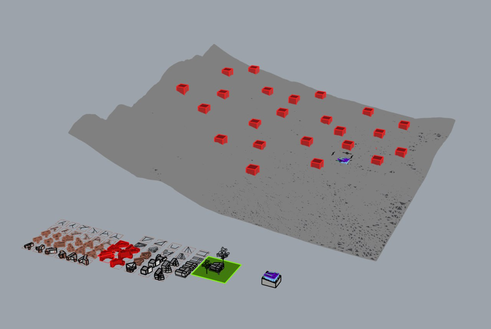